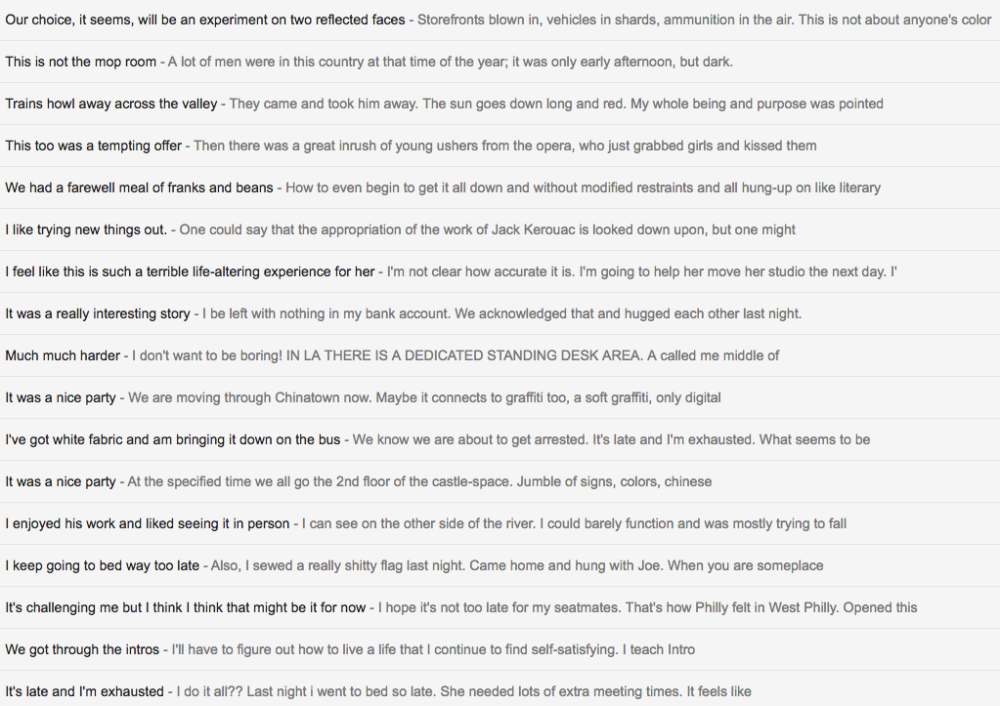

LeeTusman4You was a spambot designed to send 'artisanal' hand-selected spam to friends, family and online acquaintances of artist Lee Tusman. Based on a body of 11 years of sent messages, LeeTusman4You generates new messages through an algorithm that churns out new email based on previously sent messages. These unsolicited and possibly unwanted new messages reveal past or present emotions, create new misleading intentions, send information to the wrong recipient, and generally open the artist up to increased scrutiny. The artist has been previously criticized by friends for his high volume of messages and online posts. Lee Tusman4You pushes the boundaries of their tolerance even further.
LeeTusman4You was shut down by Google in February 2016 and revived temporarily before finally meeting its demise in March 2016.